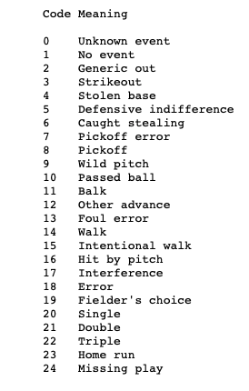

library(tidyverse)
library(Lahman)
library(knitr)MA388 Sabermetrics: Lesson 11
Behaviors by Count: Swinging Tendencies
Review
Last class, we calculated the mean run values for singles, doubles, triples, and home runs (Table 1).
mean_run_value <- data.frame(hit_type = c("single", "double", "triple", "home run"),
mean_value = c(0.442418556, 0.735933749,
1.064453731, 1.392392642))
mean_run_value |>
kable(digits = 2, caption = "Mean Run Values (2011 season)")| hit_type | mean_value |
|---|---|
| single | 0.44 |
| double | 0.74 |
| triple | 1.06 |
| home run | 1.39 |
How might you use these average run values to calculate the overall value of different players?
How might your proposed method of evaluating players improve upon slugging percentage (SLG) and batting average (AVG)?
Chapter 6
In Chapter 5, we used run values to evaluate players (RE24) and plays (sacrifice bunting). In this chapter, we’ll use run values to evaluate other aspects of the game. Along the way, you’ll gain some experience working with strings. For example, we might want to investigate the effect of ball-strike count on expected runs.
Why does ball-strike count affect expected runs?
The goal of today is to calculate the change in expected run value for at-bats passing through each count. Retrosheet play-by-play data records the sequence of pitches in each at-bat in the variable pitch_seq_tx.
# Load the 2011 Retrosheet play-by-play data for 2011.
site = "https://raw.githubusercontent.com/maxtoki/baseball_R/"
fields <- read_csv(file = paste(site, "master/data/fields.csv", sep =""))
retro2011 <- read_csv(file = paste(site, "master/data/all2011.csv", sep = ""),
col_names = pull(fields, Header),
na = character())
colnames(retro2011) <- tolower(colnames(retro2011))
# Add states and run_value to every play.
# (Note the data set has to be called retro2011.)
source("./RunExpectancyMatrix.R")
retro2011 |>
select(game_id, bat_id, pit_id, pitch_seq_tx, event_cd, inn_ct, outs_ct) |>
head(10) |>
kable()| game_id | bat_id | pit_id | pitch_seq_tx | event_cd | inn_ct | outs_ct |
|---|---|---|---|---|---|---|
| ANA201104080 | davir003 | sante001 | FBSX | 2 | 1 | 0 |
| ANA201104080 | nix-j001 | sante001 | X | 2 | 1 | 1 |
| ANA201104080 | bautj002 | sante001 | CBCS | 3 | 1 | 2 |
| ANA201104080 | iztum001 | drabk001 | CBBBB | 14 | 1 | 0 |
| ANA201104080 | kendh001 | drabk001 | BCSBS | 3 | 1 | 0 |
| ANA201104080 | abreb001 | drabk001 | CBB1>S | 6 | 1 | 1 |
| ANA201104080 | abreb001 | drabk001 | CBB1>S.FBFB | 14 | 1 | 2 |
| ANA201104080 | huntt001 | drabk001 | CCX | 20 | 1 | 2 |
| ANA201104080 | wellv001 | drabk001 | BX | 2 | 1 | 2 |
| ANA201104080 | linda001 | sante001 | CBBFX | 2 | 2 | 0 |
Briefly explain what happened in the first plate appearance of the season pitch_seq_tx = "FBSX". Pitch and event codes are at the end of these lesson notes.
Unfortunately, we have some work to do to get our data in a useful format. Currently, we just have the pitch sequence. Instead, we want a variable for each count indicating whether the plate appearance passed through the count. For example, we’ll create a variable called “c01” indicating whether the plate appearance ever passed through a no balls, one strike count.
Outline steps to transform the pitch sequence into the indicator variables discussed above for each count.
Regular Expressions
Regular expressions are useful for detecting and replacing patterns in strings (what’s a string again?). Every programming language uses them. Here is a useful cheat sheet for regular expressions in R.
Some useful string functions in R include (all from the stringr package with its cheat sheet located here):
str_detect()(replaces thegrepl()function) - detects the presence of a pattern in a stringstr_replace_all()(replaces thegsub()function) - replaces part of a string with another stringstr_sub()- extracts substrings based on their location in the string
- First, we are going to remove characters in the pitch sequence that aren’t actual pitches (pick off attempts, stolen bases, etc).
Which function above should I use?
retro2011 <- retro2011 |>
mutate(pseq = str_replace_all(pitch_seq_tx, "[.>123N+*]", replacement = ""))
retro2011 |>
select(game_id, pitch_seq_tx,pseq) |>
head(10) |>
kable()| game_id | pitch_seq_tx | pseq |
|---|---|---|
| ANA201104080 | FBSX | FBSX |
| ANA201104080 | X | X |
| ANA201104080 | CBCS | CBCS |
| ANA201104080 | CBBBB | CBBBB |
| ANA201104080 | BCSBS | BCSBS |
| ANA201104080 | CBB1>S | CBBS |
| ANA201104080 | CBB1>S.FBFB | CBBSFBFB |
| ANA201104080 | CCX | CCX |
| ANA201104080 | BX | BX |
| ANA201104080 | CBBFX | CBBFX |
- Second, let’s create the “c10” variable indicating the plate appearance passes through a one ball, no strikes count. This occurs when the first pitch of the sequence is B, I, P, or V. In the regular expression below, the “^” indicates the pattern must occur at the beginning of the string.
retro2011 <- retro2011 |>
mutate(c10 = str_detect(pseq, "^[BIPV]"))
retro2011 |>
select(game_id, pitch_seq_tx, pseq, c10) |>
head(10) |>
kable()| game_id | pitch_seq_tx | pseq | c10 |
|---|---|---|---|
| ANA201104080 | FBSX | FBSX | FALSE |
| ANA201104080 | X | X | FALSE |
| ANA201104080 | CBCS | CBCS | FALSE |
| ANA201104080 | CBBBB | CBBBB | FALSE |
| ANA201104080 | BCSBS | BCSBS | TRUE |
| ANA201104080 | CBB1>S | CBBS | FALSE |
| ANA201104080 | CBB1>S.FBFB | CBBSFBFB | FALSE |
| ANA201104080 | CCX | CCX | FALSE |
| ANA201104080 | BX | BX | TRUE |
| ANA201104080 | CBBFX | CBBFX | FALSE |
- Next, let’s create the “c01” variable indicating the plate appearance passes through a no balls, one strike count. This occurs when the first pitch of the sequence is C, F, K, L, M, O, Q, R, S, or T.
retro2011 <- retro2011 |>
mutate(c01 = str_detect(pseq, "^[CFKLMOQRST]"))
retro2011 |>
select(game_id, pitch_seq_tx, pseq, c10, c01) |>
head(10) |>
kable()| game_id | pitch_seq_tx | pseq | c10 | c01 |
|---|---|---|---|---|
| ANA201104080 | FBSX | FBSX | FALSE | TRUE |
| ANA201104080 | X | X | FALSE | FALSE |
| ANA201104080 | CBCS | CBCS | FALSE | TRUE |
| ANA201104080 | CBBBB | CBBBB | FALSE | TRUE |
| ANA201104080 | BCSBS | BCSBS | TRUE | FALSE |
| ANA201104080 | CBB1>S | CBBS | FALSE | TRUE |
| ANA201104080 | CBB1>S.FBFB | CBBSFBFB | FALSE | TRUE |
| ANA201104080 | CCX | CCX | FALSE | TRUE |
| ANA201104080 | BX | BX | TRUE | FALSE |
| ANA201104080 | CBBFX | CBBFX | FALSE | TRUE |
- Now, things start getting a little more complicated. Next, let’s create variables for 2-0, 3-0, and 0-2 counts. With these, we just have to see if the patterns repeat themselves. In the regular expression below, the “{2}” and “{3}” indicate the number of repetitions of the pattern required for a match.
retro2011 <- retro2011 |>
mutate(c20 = str_detect(pseq, "^[BIPV]{2}"),
c30 = str_detect(pseq, "^[BIPV]{3}"),
c02 = str_detect(pseq, "^[CFKLMOQRST]{2}"))
retro2011 |>
select(game_id, pseq, c10, c01, c20, c30, c02) |>
head(10) |>
kable()| game_id | pseq | c10 | c01 | c20 | c30 | c02 |
|---|---|---|---|---|---|---|
| ANA201104080 | FBSX | FALSE | TRUE | FALSE | FALSE | FALSE |
| ANA201104080 | X | FALSE | FALSE | FALSE | FALSE | FALSE |
| ANA201104080 | CBCS | FALSE | TRUE | FALSE | FALSE | FALSE |
| ANA201104080 | CBBBB | FALSE | TRUE | FALSE | FALSE | FALSE |
| ANA201104080 | BCSBS | TRUE | FALSE | FALSE | FALSE | FALSE |
| ANA201104080 | CBBS | FALSE | TRUE | FALSE | FALSE | FALSE |
| ANA201104080 | CBBSFBFB | FALSE | TRUE | FALSE | FALSE | FALSE |
| ANA201104080 | CCX | FALSE | TRUE | FALSE | FALSE | TRUE |
| ANA201104080 | BX | TRUE | FALSE | FALSE | FALSE | FALSE |
| ANA201104080 | CBBFX | FALSE | TRUE | FALSE | FALSE | FALSE |
Counts with some number of balls and one strike aren’t much more difficult to find; you just have to account for the different combinations.
# Ball codes.
b <- "[BIPV]"
# Strike codes.
s <- "[CFKLMOQRST]"
# 1-1, 2-1, and 3-1 counts.
retro2011 <- retro2011 |>
mutate(c11 = str_detect(pseq, paste0("^", s, b,
"|", b, s)),
c21 = str_detect(pseq, paste0("^", s, b, b,
"|", b, s, b,
"|", b, b, s)),
c31 = str_detect(pseq, paste0("^", s, b, b, b,
"|", b, s, b, b,
"|", b, b, s, b,
"|", b, b, b, s))) Two strike counts are considerably different. A foul ball keeps the number of strikes at two. In other words, the hitter can hit foul balls indefinitely without changing the count when there are two strikes.
# 1-2, 2-2, and 3-2 counts.
retro2011 <- retro2011 |>
mutate(c12 = str_detect(pseq, paste0("^", b, s, s,
"|", s, b, s,
"|", s, s, "[FR]*", b)),
c22 = str_detect(pseq, paste0("^", b, b, s, s,
"|", b, s, b, s,
"|", b, s, s, "[FR]*", b,
"|", s, b, b, s,
"|", s, b, s, "[FR]*", b,
"|", s, s, "[FR]*", b, "[FR]*", b)),
c32 = str_detect(pseq, paste0("^", s, "*", b, s,
"*", b, s,
"*", b)) &
str_detect(pseq, paste0("^", b, "*", s, b, "*", s)))
retro2011 |>
select(pseq, c10, c01,c20, c30, c02, c11, c21, c31, c12, c22, c32) |>
head(10) |>
kable()| pseq | c10 | c01 | c20 | c30 | c02 | c11 | c21 | c31 | c12 | c22 | c32 |
|---|---|---|---|---|---|---|---|---|---|---|---|
| FBSX | FALSE | TRUE | FALSE | FALSE | FALSE | TRUE | FALSE | FALSE | TRUE | FALSE | FALSE |
| X | FALSE | FALSE | FALSE | FALSE | FALSE | FALSE | FALSE | FALSE | FALSE | FALSE | FALSE |
| CBCS | FALSE | TRUE | FALSE | FALSE | FALSE | TRUE | FALSE | FALSE | TRUE | FALSE | FALSE |
| CBBBB | FALSE | TRUE | FALSE | FALSE | FALSE | TRUE | TRUE | TRUE | FALSE | FALSE | FALSE |
| BCSBS | TRUE | FALSE | FALSE | FALSE | FALSE | TRUE | FALSE | FALSE | TRUE | TRUE | FALSE |
| CBBS | FALSE | TRUE | FALSE | FALSE | FALSE | TRUE | TRUE | FALSE | FALSE | TRUE | FALSE |
| CBBSFBFB | FALSE | TRUE | FALSE | FALSE | FALSE | TRUE | TRUE | FALSE | TRUE | TRUE | TRUE |
| CCX | FALSE | TRUE | FALSE | FALSE | TRUE | FALSE | FALSE | FALSE | FALSE | FALSE | FALSE |
| BX | TRUE | FALSE | FALSE | FALSE | FALSE | FALSE | FALSE | FALSE | FALSE | FALSE | FALSE |
| CBBFX | FALSE | TRUE | FALSE | FALSE | FALSE | TRUE | TRUE | FALSE | FALSE | TRUE | FALSE |
Lastly, let’s convert to long format (why is the current format called wide?) and filter for counts the plate appearances passed through.
# Convert to long format.
pbp_counts <- retro2011 |>
mutate(c00 = TRUE) |> # All plate appearances pass through 0-0 count.
select(starts_with("c"), run_value) |>
pivot_longer(cols = -run_value,
names_to = "count",
values_to = "passes_thru") |>
filter(passes_thru == TRUE)
pbp_counts |>
head(10)# A tibble: 10 × 3
run_value count passes_thru
<dbl> <chr> <lgl>
1 -0.216 c01 TRUE
2 -0.216 c11 TRUE
3 -0.216 c12 TRUE
4 -0.216 c00 TRUE
5 -0.158 c00 TRUE
6 -0.0972 c01 TRUE
7 -0.0972 c11 TRUE
8 -0.0972 c12 TRUE
9 -0.0972 c00 TRUE
10 0.364 c01 TRUE run_value_by_count <- pbp_counts |>
group_by(count) |>
summarize(mean_run_value = mean(run_value))
run_value_by_count |>
kable()| count | mean_run_value |
|---|---|
| c00 | 0.0019988 |
| c01 | -0.0374706 |
| c02 | -0.0891545 |
| c10 | 0.0391984 |
| c11 | -0.0137881 |
| c12 | -0.0504418 |
| c20 | 0.0980970 |
| c21 | 0.0216407 |
| c22 | -0.0209781 |
| c30 | 0.1886023 |
| c31 | 0.1059794 |
| c32 | 0.0476942 |
# Plot the results.
run_value_by_count |>
mutate(balls = str_sub(count,2,2),
strikes = str_sub(count,3,3)) |>
ggplot(aes(x = strikes, y = balls, fill = mean_run_value)) +
geom_tile() +
geom_text(aes(label = round(mean_run_value,3))) +
scale_fill_gradient2("Mean Run Value",
low = "grey10",
high = "blue",
mid = "white",
midpoint = 0) +
labs(title = "Mean Run Value for Possible Ball-Strike Counts")
Pitch and Event Codes

